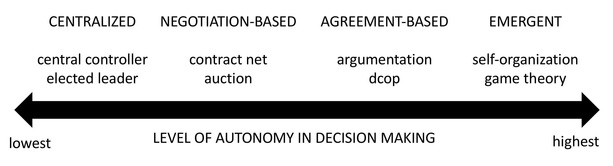

REoCAS @ ISOLA, 27/10/2021
Degrees of Autonomy in Coordinating Collectives of Self-Driving Vehicles
Stefano Mariani and Franco Zambonelli
Università di Modena e Reggio Emilia
Motivation & Goal
- current research on self-driving mostly about individual vehicles
- but cooperative driving is necessary for collectives of vehicles in many situations
- e.g. crossing intersections, platoon formation, fleet management, ...
- cooperative driving demands for coordination
- we overview key issues in coordinating self-driving vehicles
- we focus on intersection crossing and categorise existing approaches
- we argue for an adjustable autonomy approach
- we overview key challenges for this
Key issues
- coordinating vehicles $\rightarrow$ decision making process orchestrating vehicles' actions
- necessary to achieve own and shared ones
- competitive/collaborative, resource/task -oriented
- poses 3 challenges
- safety: no collisions, usually
- liveness: problem specific*
- quality: problem specific*
*e.g. intersection crossing $\rightarrow$ no waiting forever, max throughput
Problems overview
| |
resource-oriented |
task-oriented |
| competitive |
intersection crossing, parking (private) |
ride sharing (private), ramp merging |
| collaborative |
parking (fleets), traffic flow optimisation |
ride sharing (fleets), platooning |
Focus on: intersection crossing
- safety $\rightarrow$ no collisions
- liveness $\rightarrow$ each vehicle eventually gets right of way
- quality $\rightarrow$ min. cumulative delay / max. crossing throughput
Autonomy-based categorisation
Approaches categorised based on degree of autonomy left to vehicles during coordination
i.e. to what extent vehicles can decide their own actions

Categories
- centralised
- burden of coordination onto a single entity (Intersection Manager)
- every vehicles abides to IM decisions by design
- negotiation-based
- burden distributed amongst vehicles (and possibly a broker)
- fixed coordination protocol, fixed goal, fixed strategies
- agreement-based
- burden distributed amongst vehicles
- dynamic coordination protocol, dynamic goal, switching strategies
- emergent
- burden distributed amongst vehicles
- no explicit protocol, no shared goals
Intersection crossing
- centralised
- easiest to rigorously engineer and formally verify
- guarantees of safety and liveness often available
- the IM is a bottleneck, and demands for dedicated infrastructure
- negotiation-based
- still formally verifiable as protocol is fixed
- can still guarantee safety if vehicles comply (no attackers)
- liveness can be an issue especially for auctions
- neutrality issues may arise (the rich always win)
- agreement-based
- not much literature in this category
- usually difficult to implement, analyse, and control
- but may provide several benefits, e.g. flexibility and explainability
- emergent
- difficult to guarantee any property
- potentially relevant in mixed scenarios (i.e. with human drivers too)
Why adjustable autonomy
A single approach can hardly fit all possible run-time situations
- low traffic $\rightarrow$ negotiation/agreement based
- more autonomy to vehicles
- still manageable in number of messages
- high traffic $\rightarrow$ centralised approaches
- less autonomy to vehicles
- strict control to avoid collisions and delays
Thus: switch 'em!
How adjustable autonomy
- Open issue in cooperative driving, proposals in robotics and MAS
- Several challenges (akin to MAPE-K loop)
- learn best approach for each problem and specific situation
- have functional and non-functional performance metrics available to decide
- decide when to switch, possibly before degradation of efficacy
- decide how to switch (can't "pause" vehicles)
Further challenges
Besides adjustable autonomy, cooperative coordinated driving still in its infancy
- system of systems coordination (e.g. "butterfly effects" in intersection networks)
- dynamic pricing mechanisms may arise, threatening fairness and road neutrality
- dealing with mixed scenarios, as level 5 self-driving will not replace legacy vehicles overnight
Conclusion & outlook
- framed traffic-related problems into coordination concepts
- proposed autonomy-based categorisation of solution approaches
- argued for adjustable autonomy in coordinated cooperative driving
- propose practical approach to adjustable autonomy
- further analyse mixed scenarios
Thanks
for your attention
Stefano Mariani
Università di Modena e Reggio Emilia